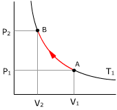
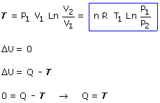
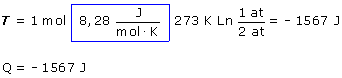

 |

|
Sustituyendo valores:

El trabajo negativo significa que el entorno hizo trabajo
sobre el gas para comprimirlo
El calor negativo indica que el gas cedió calor al entorno (Tanto
como trabajo hizo el entorno sobre él). Éste es un ejemplo
de conversión completa de trabajo en calor
|